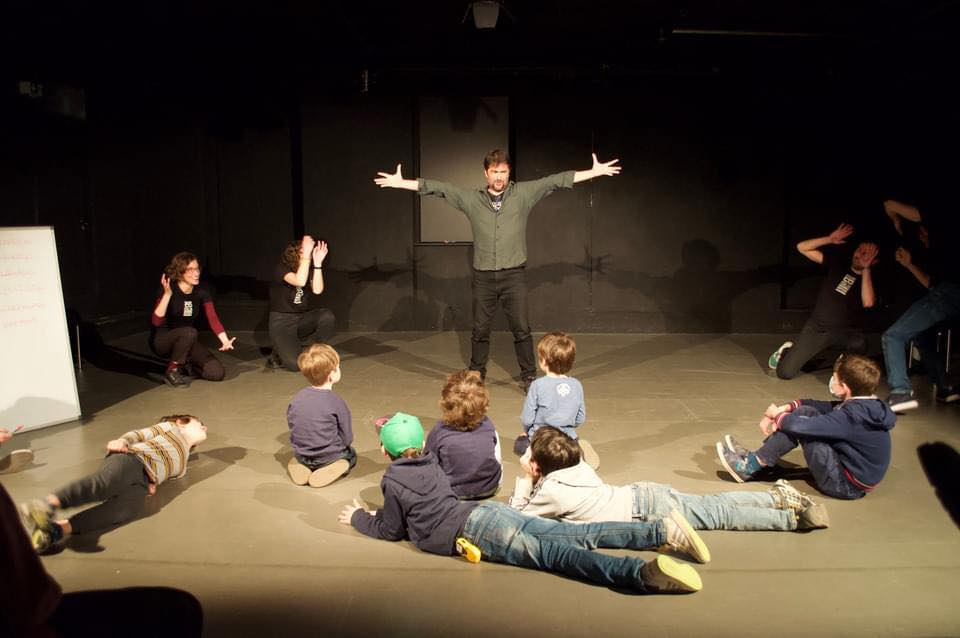

Il pubblico non osserva, partecipa
La classe non è semplice spettatrice. Suggerisce parole, personaggi, situazioni di partenza. Quello che succede sul palco dipende anche da loro: ogni voce conta.
Berlino Italia Improv presenta
Spettacolo e laboratorio di improvvisazione teatrale
ispirato a Gianni Rodari. A Berlino, in italiano.
«La fantasia non è un lusso, è una necessità.»
— Gianni Rodari, Grammatica della Fantasia, 1973
Rodari non è solo uno degli autori più amati della letteratura italiana: è un metodo. Il suo lavoro sulla fantasia, sul gioco e sull'errore come risorsa creativa è esattamente quello di cui ha bisogno chi fa improvvisazione teatrale.
Utilizziamo le sue idee come punto di partenza per portare ragazzi e studenti sul palco — trasformandole in esperienze teatrali vive, partecipate, in italiano. Non spieghiamo Rodari: lo mettiamo in scena.
Il risultato sono due proposte distinte che si possono sviluppare insieme o separatamente: uno spettacolo interattivo per le classi e un laboratorio d'improvvisazione per ragazzi.

L'opera più importante di Rodari in uno spettacolo di improvvisazione teatrale. Gli attori non hanno un copione: costruiscono le storie sul momento usando le tecniche descritte nel libro, a partire dai suggerimenti del pubblico.
La classe non è semplice spettatrice. Suggerisce parole, personaggi, situazioni di partenza. Quello che succede sul palco dipende anche da loro: ogni voce conta.
Gli improvvisatori portano sul palco scenari impossibili resi credibili dall'ascolto e dalla collaborazione. Il meccanismo è semplice: «Cosa succederebbe se…?» — e la storia parte.
Lo spettacolo prende le mosse dalle tecniche narrative di Gianni Rodari e dalla tradizione dell'improvvisazione teatrale internazionale (Keith Johnstone, Viola Spolin). Un incontro tra pedagogia e palcoscenico.
Lo spettacolo si adatta all'età e alla composizione del gruppo. È possibile abbinarlo a un breve incontro introduttivo in classe, per preparare i ragazzi all'esperienza.
Classi di scuola media e superiore. Lo spettacolo si tiene direttamente a scuola oppure in teatro, sempre in italiano.
Un'esperienza che stimola la partecipazione attiva e apre riflessioni su comunicazione, creatività e lavoro di gruppo.
Uno spettacolo accessibile e coinvolgente per famiglie italofone, da vivere insieme in un contesto informale e festoso.
Disponibile per eventi, festival e iniziative promosse da enti culturali italiani e italo-tedeschi in Germania.
Un percorso di improvvisazione teatrale per ragazzi italofoni a Berlino. Si impara facendo. Nessuna esperienza richiesta.
Il teatro improvvisato è un modo di portare a teatro storie create sul momento, senza un testo da studiare a memoria. Attraverso il gioco ci immergiamo nell'universo magico di tutto ciò che «potrebbe succedere se…».
Nel laboratorio si allena la concentrazione, la velocità di reazione, la capacità di collaborare, l'abilità di comunicare intenzioni, la sospensione del giudizio, la capacità di fare scelte, di lasciarsi sorprendere, di accettare le idee altrui, di ascoltare, di osservarsi, di fidarsi del proprio intuito e delle proprie emozioni.
Si impara a non perdere la testa di fronte al vuoto, a fallire e costruire insieme e a rendersi conto di come un SÌ o un NO possono cambiare il corso della storia.
Il tutto ispirato da Gianni Rodari, che credeva nella creatività come processo accessibile a tutti — non come talento di pochi.
Luca Rizzuti è nato a Roma. Nel 2016 arriva a Berlino portando con sé anni di pratica nell'improvvisazione teatrale — iniziata come musicista al fianco di gruppi di teatro impro — e la convinzione che sia possibile creare un polo di improvvisazione in lingua italiana capace di dialogare con le migliori scuole internazionali.
Nel 2017 fonda Berlino Italia Improv, oggi membro dell'International Theatresports Institute. La scuola propone corsi di tre livelli e spettacoli mensili a Berlino. Ha ideato Berlino Babel Impro, un format multilingue che porta sul palco improvvisatori di diverse lingue in uno show comprensibile a tutti.
Come formatore, il suo approccio non punta a insegnare tecniche: aiuta i partecipanti a riconoscere e disattivare le difese che ognuno di noi ha sviluppato per evitare il fallimento. Perché l'improvvisazione, come la fantasia, richiede il coraggio di sbagliare.
Articoli, interviste e reportage su Luca Rizzuti e Berlino Italia Improv.
Il testo fondativo. Una guida alle tecniche dell'invenzione narrativa, pensata per chi lavora con le nuove generazioni — e per chiunque voglia capire come funzionano le storie.
La bibbia dell'improvvisazione moderna. Johnstone ha rivoluzionato il teatro insegnando ad accettare ogni offerta e a costruire sopra — il principio del «sì, e…».
Il sistema di giochi teatrali di Spolin è ancora oggi il punto di riferimento per chi insegna teatro attraverso il gioco, il corpo e la presenza.
Sei un insegnante, un genitore, un educatore o un organizzatore? Scrivici per portare lo spettacolo e/o il laboratorio nella tua scuola.